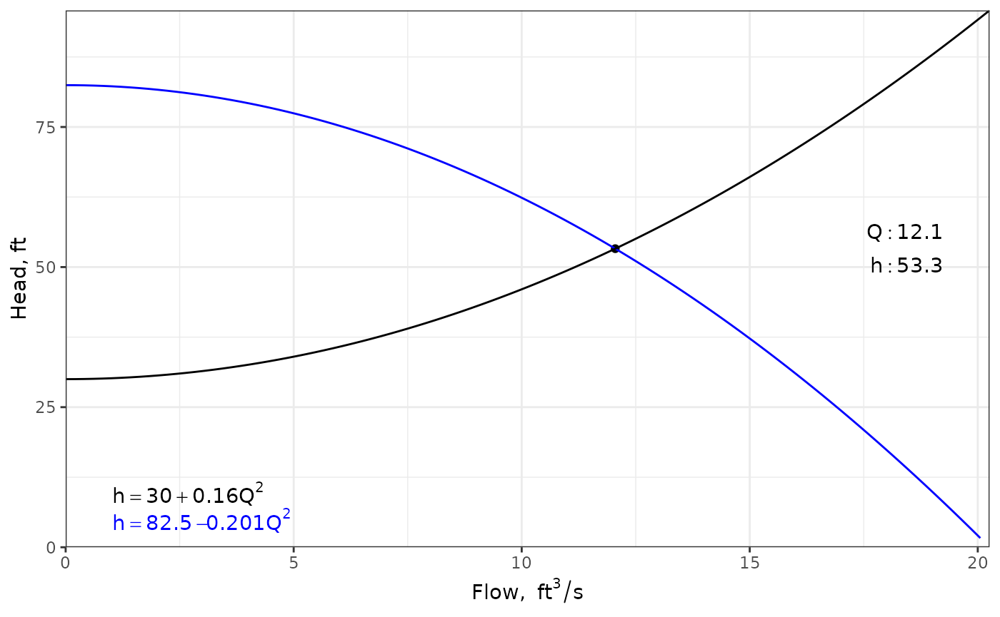

Hydraulics Vignette
Ed Maurer
2024-11-18
Source:vignettes/hydraulics_vignette.Rmd
hydraulics_vignette.RmdIntroduction to the hydraulics package
The hydraulics package was developed to augment education in basic closed conduit and open channel hydraulics. Most common applications in civil engineering involve water flowing under turbulent conditions, so the functions make that assumption. If that assumption is violated, a warning is generated, though that often means there was an input error. Because engineering calculations are burdened by the persistence of U.S. customary (often referred to as English) units, all functions work in either system by designating units as either SI or Eng.
1.0 Water properties
When describing the behavior of water in pipes and channels under turbulent flow conditions there are three water properties used used in calculations, all of which vary with water temperature: density (), dynamic viscosity(), and kinematic viscosity(), where they are related by . An additional function exists for saturated vapor pressure of water.
These properties are found using the dens, dvisc, kvisc, and svp functions. For example, the kinematic viscosity for water temperature of 55 F is found as follows:
nu = kvisc(T = 55, units = 'Eng')
cat(sprintf("Kinematic viscosity: %.3e ft2/s\n", nu))
#> Kinematic viscosity: 1.318e-05 ft2/sSimilarly the water density for water temperature of 25 C can be determined by:
rho = dens(T = 25, units = 'SI')
cat(sprintf("Water density: %.3f kg/m3\n", rho))
#> Water density: 997.075 kg/m3The water property functions can all accept a list of input temperature values, enabling visualization of a property with varying water temperature, for example:
Ts <- seq(0, 100, 10)
nus <- kvisc(T = Ts, units = 'SI')
xlbl <- expression("Temperature, " (degree*C))
ylbl <- expression("Kinematic viscosity," ~nu~ (m^{2}/s))
par(cex=0.8, mgp = c(2,0.7,0))
plot(Ts, nus, xlab = xlbl, ylab = ylbl, type="l")The water property functions can also be called with the ret_units parameter, in which case the function returns an object of class units, as designated by the package units. This enables capabilities for new units being deduced as operations are performed on the values. Concise examples are in the vignettes for the ‘units’ package.
T <- 25
Dens <- dens(T = T, units = 'SI', ret_units = TRUE)
Dvisc <- dvisc(T = T, units = 'SI', ret_units = TRUE)
#Calculate kinematic viscosity and units are generated correctly
Kvisc <- Dvisc / Dens
Kvisc
#> 9.134879e-07 [m*N*s/kg]While the units are correct, they are not in their simplified form. That can be done by setting new units. Unit conversions are done the same way.
units::set_units(Kvisc, m^2/s)
#> 9.134879e-07 [m^2/s]
units::set_units(Kvisc, ft^2/s)
#> 9.832702e-06 [ft^2/s]An example finding the saturated vapor pressure to water at 10 C follows.
vps <- svp(T = 10, units = "SI", ret_units = T)
vps
#> 1228.188 [Pa]
#convert to psi - notice the need to enclose "in" with backticks since "in"
#has other meanings in R
units::set_units(vps,lbf/`in`^2)
#> 0.1781336 [lbf/in^2]If the results are of class units they also can have the units plot without the cumbersome formatting of axis labels.
Temperature <- units::set_units(seq(0, 100, 10), degree_Celsius)
Kinematic_Viscosity <- kvisc(T = Temperature, units = 'SI', ret_units = TRUE)
par(cex=0.8, mar = par("mar") + c(0, .2, 0, 0))
plot(Temperature, Kinematic_Viscosity, type="l")Sometimes it is useful to have a table containing water properties organized by temperature. The ‘hydraulics’ package includes a water_table function to generate a table in either SI or Eng units.
tbl <- water_table(units = "SI")
tbl
#> # A tibble: 21 × 8
#> Temp Density Spec_Weight Viscosity Kinem_Visc Sat_VP Surf_Tens Bulk_Mod
#> [C] [kg/m^3] [N/m^3] [N*s/m^2] [m^2/s] [Pa] [N/m] [Pa]
#> 1 0 1000. 9809. 0.00173 0.00000173 611. 0.0757 2020000000
#> 2 5 1000. 9810. 0.00150 0.00000150 873. 0.0749 2060000000
#> 3 10 1000. 9807. 0.00131 0.00000131 1228. 0.0742 2100000000
#> 4 15 999. 9801. 0.00115 0.00000115 1706. 0.0735 2140000000
#> 5 20 998. 9793. 0.00102 0.00000102 2339. 0.0727 2180000000
#> 6 25 997. 9781. 0.000911 0.000000913 3170. 0.0720 2220000000
#> 7 30 996. 9768. 0.000817 0.000000821 4247. 0.0712 2250000000
#> 8 35 994. 9752. 0.000738 0.000000742 5629. 0.0704 2265000000
#> 9 40 992. 9734. 0.000670 0.000000675 7385. 0.0696 2280000000
#> 10 45 990. 9714. 0.000611 0.000000617 9595. 0.0688 2285000000
#> # ℹ 11 more rowsThe table can be reformatted to something more attractive using the kableExtra and formatdown packages.
# Manage units
unitlist <- sapply(unname(tbl), units::deparse_unit)
colnames <- names(tbl)
tbl <- units::drop_units(tbl)
# Assign size argument for table output
formatdown::formatdown_options(size = "small")
# Format text as-is (i.e., as integers)
tbl$Temp <- formatdown::format_text(tbl$Temp)
# Format decimals to 4 significant digits
cols_we_want = c("Density", "Spec_Weight")
tbl[, cols_we_want] <- lapply(tbl[, cols_we_want], function (x) {formatdown::format_dcml(x, digits = 4)}
)
# Format using power-of-ten notation to 4 significant digits
cols_we_want = c("Viscosity", "Kinem_Visc")
tbl[, cols_we_want] <- lapply(tbl[, cols_we_want], function (x) {formatdown::format_engr(x, digits = 4)}
)
# Exponent set to 3 for all entries
tbl$Sat_VP <- formatdown::format_engr(tbl$Sat_VP, digits = 4, set_power = 3)
# Format using power-of-ten notation to 3 significant digits
cols_we_want = c("Surf_Tens", "Bulk_Mod")
tbl[, cols_we_want] <- lapply(tbl[, cols_we_want], function (x) {formatdown::format_engr(x, digits = 3)}
)
# Reset size option
formatdown::formatdown_options(reset = TRUE)
tbl2 <- knitr::kable(tbl, col.names = unitlist, align = "c", format = "html")
kableExtra::add_header_above(tbl2, header = colnames, line = F, align = "c")| C | kg m-3 | N m-3 | N s m-2 | m2 s-1 | Pa | N m-1 | Pa |
|---|---|---|---|---|---|---|---|
| $\small \mathrm{0}$ | $\small 999.9$ | $\small 9809$ | $\small 1.734 \times 10^{-3}$ | $\small 1.734 \times 10^{-6}$ | $\small 0.6112 \times 10^{3}$ | $\small 75.7 \times 10^{-3}$ | $\small 2.02 \times 10^{9}$ |
| $\small \mathrm{5}$ | $\small 1000$ | $\small 9810$ | $\small 1.501 \times 10^{-3}$ | $\small 1.501 \times 10^{-6}$ | $\small 0.8726 \times 10^{3}$ | $\small 74.9 \times 10^{-3}$ | $\small 2.06 \times 10^{9}$ |
| $\small \mathrm{10}$ | $\small 999.7$ | $\small 9807$ | $\small 1.310 \times 10^{-3}$ | $\small 1.311 \times 10^{-6}$ | $\small 1.228 \times 10^{3}$ | $\small 74.2 \times 10^{-3}$ | $\small 2.10 \times 10^{9}$ |
| $\small \mathrm{15}$ | $\small 999.1$ | $\small 9801$ | $\small 1.153 \times 10^{-3}$ | $\small 1.154 \times 10^{-6}$ | $\small 1.706 \times 10^{3}$ | $\small 73.5 \times 10^{-3}$ | $\small 2.14 \times 10^{9}$ |
| $\small \mathrm{20}$ | $\small 998.2$ | $\small 9793$ | $\small 1.021 \times 10^{-3}$ | $\small 1.023 \times 10^{-6}$ | $\small 2.339 \times 10^{3}$ | $\small 72.7 \times 10^{-3}$ | $\small 2.18 \times 10^{9}$ |
| $\small \mathrm{25}$ | $\small 997.1$ | $\small 9781$ | $\small 910.8 \times 10^{-6}$ | $\small 913.5 \times 10^{-9}$ | $\small 3.170 \times 10^{3}$ | $\small 72.0 \times 10^{-3}$ | $\small 2.22 \times 10^{9}$ |
| $\small \mathrm{30}$ | $\small 995.7$ | $\small 9768$ | $\small 817.4 \times 10^{-6}$ | $\small 821.0 \times 10^{-9}$ | $\small 4.247 \times 10^{3}$ | $\small 71.2 \times 10^{-3}$ | $\small 2.25 \times 10^{9}$ |
| $\small \mathrm{35}$ | $\small 994.1$ | $\small 9752$ | $\small 738.0 \times 10^{-6}$ | $\small 742.4 \times 10^{-9}$ | $\small 5.629 \times 10^{3}$ | $\small 70.4 \times 10^{-3}$ | $\small 2.26 \times 10^{9}$ |
| $\small \mathrm{40}$ | $\small 992.2$ | $\small 9734$ | $\small 669.9 \times 10^{-6}$ | $\small 675.1 \times 10^{-9}$ | $\small 7.385 \times 10^{3}$ | $\small 69.6 \times 10^{-3}$ | $\small 2.28 \times 10^{9}$ |
| $\small \mathrm{45}$ | $\small 990.2$ | $\small 9714$ | $\small 611.2 \times 10^{-6}$ | $\small 617.3 \times 10^{-9}$ | $\small 9.595 \times 10^{3}$ | $\small 68.8 \times 10^{-3}$ | $\small 2.28 \times 10^{9}$ |
| $\small \mathrm{50}$ | $\small 988.1$ | $\small 9693$ | $\small 560.5 \times 10^{-6}$ | $\small 567.2 \times 10^{-9}$ | $\small 12.35 \times 10^{3}$ | $\small 67.9 \times 10^{-3}$ | $\small 2.29 \times 10^{9}$ |
| $\small \mathrm{55}$ | $\small 985.7$ | $\small 9670$ | $\small 516.2 \times 10^{-6}$ | $\small 523.7 \times 10^{-9}$ | $\small 15.76 \times 10^{3}$ | $\small 67.1 \times 10^{-3}$ | $\small 2.28 \times 10^{9}$ |
| $\small \mathrm{60}$ | $\small 983.2$ | $\small 9645$ | $\small 477.6 \times 10^{-6}$ | $\small 485.7 \times 10^{-9}$ | $\small 19.95 \times 10^{3}$ | $\small 66.2 \times 10^{-3}$ | $\small 2.28 \times 10^{9}$ |
| $\small \mathrm{65}$ | $\small 980.6$ | $\small 9619$ | $\small 443.5 \times 10^{-6}$ | $\small 452.3 \times 10^{-9}$ | $\small 25.04 \times 10^{3}$ | $\small 65.4 \times 10^{-3}$ | $\small 2.26 \times 10^{9}$ |
| $\small \mathrm{70}$ | $\small 977.7$ | $\small 9592$ | $\small 413.5 \times 10^{-6}$ | $\small 422.9 \times 10^{-9}$ | $\small 31.20 \times 10^{3}$ | $\small 64.5 \times 10^{-3}$ | $\small 2.25 \times 10^{9}$ |
| $\small \mathrm{75}$ | $\small 974.8$ | $\small 9563$ | $\small 386.9 \times 10^{-6}$ | $\small 396.9 \times 10^{-9}$ | $\small 38.60 \times 10^{3}$ | $\small 63.6 \times 10^{-3}$ | $\small 2.22 \times 10^{9}$ |
| $\small \mathrm{80}$ | $\small 971.7$ | $\small 9533$ | $\small 363.1 \times 10^{-6}$ | $\small 373.7 \times 10^{-9}$ | $\small 47.42 \times 10^{3}$ | $\small 62.7 \times 10^{-3}$ | $\small 2.20 \times 10^{9}$ |
| $\small \mathrm{85}$ | $\small 968.5$ | $\small 9501$ | $\small 341.9 \times 10^{-6}$ | $\small 353.0 \times 10^{-9}$ | $\small 57.87 \times 10^{3}$ | $\small 61.8 \times 10^{-3}$ | $\small 2.17 \times 10^{9}$ |
| $\small \mathrm{90}$ | $\small 965.2$ | $\small 9468$ | $\small 322.9 \times 10^{-6}$ | $\small 334.5 \times 10^{-9}$ | $\small 70.18 \times 10^{3}$ | $\small 60.8 \times 10^{-3}$ | $\small 2.14 \times 10^{9}$ |
| $\small \mathrm{95}$ | $\small 961.7$ | $\small 9434$ | $\small 305.7 \times 10^{-6}$ | $\small 317.9 \times 10^{-9}$ | $\small 84.61 \times 10^{3}$ | $\small 59.9 \times 10^{-3}$ | $\small 2.10 \times 10^{9}$ |
| $\small \mathrm{100}$ | $\small 958.1$ | $\small 9399$ | $\small 290.2 \times 10^{-6}$ | $\small 302.9 \times 10^{-9}$ | $\small 101.4 \times 10^{3}$ | $\small 58.9 \times 10^{-3}$ | $\small 2.07 \times 10^{9}$ |
While the hydraulics package is focused on water, properties of the atmosphere are important for characterizing the interaction of water with air. The is particularly important for phenomena such as evaporation and condensation. Selected characteristics of the standard atmosphere, as determined by the International Civil Aviation Organization (ICAO), are included in the package. Three functions return different properties of the standard atmosphere:
| Function | Returns |
|---|---|
| atmtemp | Atmospheric Temperature |
| atmpres | Pressure |
| atmdens | Density |
All atmospheric functions have input arguments of altitude (ft or m), unit system (SI or Eng), and whether or not units should be returned.
atmpres(alt = 3000, units = "SI", ret_units = TRUE)
#> 70121.14 [Pa]Similar to the water properties table, a summary of the standard atmosphere can be obtained with the function atmos_table.
tbl <- atmos_table(units = "SI")
tbl
#> # A tibble: 16 × 4
#> Altitude Temp Pressure Density
#> [m] [C] [Pa] [kg/m^3]
#> 1 0 15 101325 1.23
#> 2 1000 8.50 89876. 1.11
#> 3 2000 2.00 79501. 1.01
#> 4 3000 -4.49 70121. 0.909
#> 5 4000 -11.0 61660. 0.819
#> 6 5000 -17.5 54048. 0.736
#> 7 6000 -24.0 47218. 0.660
#> 8 7000 -30.5 41105. 0.590
#> 9 8000 -36.9 35652. 0.526
#> 10 9000 -43.4 30801. 0.467
#> 11 10000 -49.9 26500. 0.414
#> 12 11000 -56.4 22700. 0.365
#> 13 12000 -62.9 19355. 0.321
#> 14 13000 -69.3 16421. 0.281
#> 15 14000 -75.8 13859. 0.245
#> 16 15000 -82.3 11632. 0.2122.0 Fundamental constants
Two of the most important descriptive quantities in engineering hydraulics are the Reynolds number, Re and the Froude number Fr. describes the turbulence of the flow. It expresses the ratio of kinematic forces, expressed by velocity V and a characteristic length such as pipe diameter, D, to viscous forces as expressed by the kinematic viscosity . For open channels the characteristic length is the hydraulic depth, the area of flow divided by the top width. For adequately turbulent conditions to exists, Reynolds numbers should exceed 4000 for full pipes, and 2000 for open channels.
For open channel flow, given a channel shape and flow rate, flow can usually exist at two different depths, termed subcritical (slow, deep) and supercritical (shallow, fast). The exception is at critical flow conditions, where only one depth exists, the critical depth. Which depth is exhibited by the flow is determined by the slope and roughness of the channel. The Froude number is defined by . Fr characterizes flow as:
| Fr | Condition |
|---|---|
| <1.0 | subcritical |
| =1.0 | critical |
| >1.0 | supercritical |
These constants are calculated internally and returned with the output of many functions. Critical flow is important in open-channel flow applications and is discussed further below.
3.0 Friction Loss in Circular Pipes
The energy at any point along a pipe containing flowing water is often described by the energy per unit weight, or energy head, E: where P is the pressure, is the specific weight of water, z is the elevation of the point, V is the average velocity, and each term has units of length. is a kinetic energy adjustment factor to account for non-uniform velocity distribution across the cross-section. is typically assumed to be 1.0 for turbulent flow because the value is close to 1.0 and (the velocity head) tends to be small in relation to other terms in the equation.
As water flows through a pipe energy is lost due to friction with the pipe walls and local disturbances (minor losses). The energy loss between two sections is expressed as . When pipes are long, with , friction losses dominate the energy loss on the system, and the head loss, , is calculated as the head loss due to friction, . This energy head loss due to friction with the walls of the pipe is described by the Darcy-Weisbach equation, which estimates the energy loss per unit weight, or head loss , which has units of length. For circular pipes it is expressed as: In this equation f is the friction factor, typically calculated with the Colebrook equation: where is the absolute roughness of the pipe wall. There are close approximations to the Colebrook equation that have an explicit form to facilitate hand-calculations, but this package only uses the Colebrook function.
Any one of the variables in the Darcy Weisbach equation, and by extension the Colebrook equation, may be treated as an unknown. For an existing pipe with a known flow rate, the friction loss for a length of pipe may be found:
D <- 20/12 #20 inch converted to ft
L <- 10560 #ft
Q <- 4 #ft^3/s
T <- 60 #degrees F
ks <- 0.0005 #ft
ans <- darcyweisbach(Q = Q,D = D, L = L, ks = ks,
nu = kvisc(T=T, units="Eng"), units = c("Eng"))
#> hf missing: solving a Type 1 problem
cat(sprintf("Reynolds no: %.0f\nFriction Fact: %.4f\nHead Loss: %.2f ft\n",
ans$Re, ans$f, ans$hf))
#> Reynolds no: 248625
#> Friction Fact: 0.0173
#> Head Loss: 5.72 ftThe Reynolds number is adequately high to ensure flow is turbulent
and the Colebrook equation is valid. As with the water properties
function, it can be called with ret_units = TRUE to return a
list of units objects (using the same input as above):
ans <- darcyweisbach(Q = 4.0,D = 20/12, L = 10560, ks = 0.0005, nu = kvisc(T=T, units="Eng"),
units = "Eng", ret_units = TRUE)
knitr::kable(format(as.data.frame(ans), digits = 2), format = "pipe")| ans | |
|---|---|
| Q | 4 [ft^3/s] |
| V | 1.8 [ft/s] |
| L | 10560 [ft] |
| D | 1.7 [ft] |
| hf | 5.7 [ft] |
| f | 0.017 [1] |
| ks | 5e-04 [ft] |
| Re | 248625 [1] |
A new design problem can involve the calculation of a required diameter for a given head loss and flow rate, so that the pipe has a specified pressure and flow at some downstream point. An example of that follows.
Q <- 37.5 #flow in ft^3/s
L <- 8000 #pipe length in ft
hf <- 215 #head loss due to friction, in ft
T <- 68 #water temperature, F
ks <- 0.0008 #pipe roughness, ft
ans <- darcyweisbach(Q = Q, hf = hf, L = L, ks = ks, nu = kvisc(T=T, units='Eng'), units = c('Eng'))
#> D missing: solving a Type 3 problem
cat(sprintf("Reynolds no: %.0f\nFriction Fact: %.4f\nDiameter: %.2f ft\n", ans$Re, ans$f, ans$D))
#> Reynolds no: 2336974
#> Friction Fact: 0.0164
#> Diameter: 1.85 ftThe usefulness of an R package is not so much for individual calculations, but repeated trials to see how one variable might vary with another. For example, it might be interesting to see how the required diameter varies with changing flow rate. The following example illustrates the calculation of diameters required to meet the specified head loss for flows varying from 30 - 45 ft/s.
Qs <- seq(30, 45, 1.0) #flows in ft^3/s
L <- 8000 #pipe length in ft
hf <- 215 #head loss due to friction, in ft
T <- 68 #water temperature, F
ks <- 0.0008 #pipe roughness, ft
ans <- mapply(darcyweisbach, Q=Qs, MoreArgs =
list(hf = hf, L = L, ks = ks, nu = kvisc(T=T, units='Eng'), units = 'Eng'))
ans <- as.data.frame(t(ans))
plot(ans$Q, ans$D, xlab = "Q, ft^3/s", ylab = "D, ft", type="l")
grid()Another example of the use of this package would be in a laboratory setting, where pressure measurements are taken at two points along a straight pipe for a sequence of flow rates to determine pipe roughness. In this example, the length of pipe is 3 m, the diameter is 25 mm, and the following head losses were observed for different flow rates:
| Q_liter_s | Headloss_m |
|---|---|
| 0.20 | 0.052 |
| 0.24 | 0.073 |
| 0.30 | 0.110 |
The absolute roughness can be calculated by providing the other variables.
ans <- darcyweisbach(Q = 0.00020, hf = 0.052, L = 3.0, D = 0.025, nu = kvisc(T=20, units='SI'), units = c('SI'))
cat(sprintf("Absolute roughness: %.6f m\nFriction Factor: %.4f\nDiameter: %.2f m\n", ans$ks, ans$f, ans$D))
#> Absolute roughness: 0.000473 m
#> Friction Factor: 0.0514
#> Diameter: 0.03 mSeveral roughness values can be calculated in one call as shown below, and the results plotted on a Moody diagram as a reality check.
Qs = c(0.00020, 0.00024, 0.00030) #converted to m^3/s
hfs <- c(0.052,0.073,0.110)
ans <- mapply(darcyweisbach, Q=Qs, hf=hfs, MoreArgs =
list(L = 3.0, D = 0.025, nu = kvisc(T=20, units='SI'), units = 'SI'))
ks_values = unlist((as.data.frame(t(ans)))$ks)
cat(round(ks_values,6))
#> 0.000473 0.000433 0.000397
cat(paste0("\nMean Roughness, ks = ",round(mean(ks_values),6), " m"))
#>
#> Mean Roughness, ks = 0.000434 m
Re_values <- unlist((as.data.frame(t(ans)))$Re)
f_values <- unlist((as.data.frame(t(ans)))$f)
moody(Re = Re_values, f = f_values)4.0 Flow in Circular Pipes Flowing Partially Full
The Manning equation (also known as the Strickler equation) describes flow conditions in an open channel under uniform flow conditions. It is often expressed as: where C is 1.0 for SI units and 1.49 for Eng (U.S. Customary) units. Q is the flow rate, A is the cross-sectional flow area, n is the Manning roughness coefficient, and R is the hydraulic radius , where P is the wetted perimeter. Critical depth is defined by the relation (at critical conditions):
where B is the top width of the water surface.
As with full flow in circular pipes, any one of the variables in the Manning equation, and related geometric variables, may be treated as an unknown. For an existing pipe, a common problem is the determination of the depth, y that a given flow Q, will have given a pipe diameter d, slope S and roughness n. An example of that follows.
ans <- manningc(Q=0.01, n=0.013, Sf=0.001, d = 0.2, units="SI", ret_units = TRUE)
knitr::kable(format(as.data.frame(ans), digits = 2), format = "pipe", padding=0)| ans | |
|---|---|
| Q | 0.01 [m^3/s] |
| V | 0.38 [m/s] |
| A | 0.027 [m^2] |
| P | 0.44 [m] |
| R | 0.061 [m] |
| y | 0.16 [m] |
| d | 0.2 [m] |
| Sf | 0.001 [1] |
| n | 0.013 [1] |
| yc | 0.085 [m] |
| Fr | 0.3 [1] |
| Re | 22343 [1] |
| Qf | 0.01 [m^3/s] |
For circular pipes, there is also an option to allow Manning n to vary with depth, in which case the specified n is assumed to be that corresponding to full pipe flow. The output contains the n as adjusted.
ans <- manningc(Q=0.01, n=0.013, Sf=0.001, d = 0.2, n_var=TRUE, units="SI", ret_units = TRUE)
knitr::kable(format(as.data.frame(ans), digits = 2), format = "pipe", padding=0)| ans | |
|---|---|
| Q | 0.01 [m^3/s] |
| V | 0.34 [m/s] |
| A | 0.029 [m^2] |
| P | 0.48 [m] |
| R | 0.06 [m] |
| y | 0.17 [m] |
| d | 0.2 [m] |
| Sf | 0.001 [1] |
| n | 0.014 [1] |
| yc | 0.085 [m] |
| Fr | 0.24 [1] |
| Re | 20270 [1] |
| Qf | 0.01 [m^3/s] |
It is also sometimes convenient to see a cross-section diagram.
5.0 Flow in Open Channels (rectangular, triangular, trapezoidal)
As with flow in circular pipes flowing less than full, flow in an open channel of rectangular, triangular, or trapezoidal shape uses the Manning equation. Substituting the geometric relationships for hydraulic radius and cross-sectional area, the Manning equation takes the form: For a rectangular channel, the side slope is vertical, so m = 0; for a triangular channel, b = 0. For a given Q, m, n, and Sf, the most hydraulically efficient channel is found by maximizing R, which can be done by setting in the Manning equation . This produces:
The manningt function works similarly to the function for circular pipes, in that the excluded argument is the one for which the function determines a solution. For example, a design might require the slope to deliver a required flow, Q through a channel with known geometry (bottom width, b, side slope m) and a given depth y:
ans <- manningt(Q = 360., n = 0.015, m = 1, b = 20.0, y = 3.0, units = "Eng")
cat(sprintf("Slope: %.5f ft\n", ans$Sf))
#> Slope: 0.00088 ft
knitr::kable(format(as.data.frame(ans), digits = 2), format = "pipe", padding=0)| Q | V | A | P | R | y | b | m | Sf | B | n | yc | Fr | Re |
|---|---|---|---|---|---|---|---|---|---|---|---|---|---|
| 360 | 5.2 | 69 | 28 | 2.4 | 3 | 20 | 1 | 0.00088 | 26 | 0.015 | 2.1 | 0.56 | 1146737 |
Thus, a longitudinal slope for the channel would need to be 0.00088, or a drop of 0.88 ft per 1000 ft. The critical depth yc is lower than the normal depth y, indicating flow under these conditions is subcritical, also seen with Fr < 1.0.
Units can also be returned by this function.
ans <- manningt(Q = 360., n = 0.015, m = 1, b = 20.0, y = 3.0, units = "Eng", ret_units = TRUE)
knitr::kable(format(as.data.frame(ans), digits = 2), format = "pipe", padding=0)| ans | |
|---|---|
| Q | 360 [ft^3/s] |
| V | 5.2 [ft/s] |
| A | 69 [ft^2] |
| P | 28 [ft] |
| R | 2.4 [ft] |
| y | 3 [ft] |
| b | 20 [ft] |
| m | 1 [1] |
| Sf | 0.00088 [1] |
| B | 26 [ft] |
| n | 0.015 [1] |
| yc | 2.1 [ft] |
| Fr | 0.56 [1] |
| Re | 1146737 [1] |
A simple diagram can be generated for the channel.
xc_trap( y = 3.0, b = 20.0, m = 1.0, units = "Eng")When solving for flow depth, y, or channel bottom width, b, an additional variable is returned for the optimal depth, yopt, or optimal width, bopt. These are optimal for hydraulic efficiency and practical concerns with construction often result in designs that flow with depths less than the hydraulic optimum. Solving a prior example for bottom width illustrates this.
ans <- manningt(Q = 360., n = 0.015, m = 1, y = 3.0, Sf = 0.00088, units = "Eng")
knitr::kable(format(as.data.frame(ans), digits = 2), format = "pipe", padding=0)| Q | V | A | P | R | y | b | m | Sf | B | n | yc | Fr | Re | bopt |
|---|---|---|---|---|---|---|---|---|---|---|---|---|---|---|
| 360 | 5.3 | 68 | 28 | 2.4 | 3 | 20 | 1 | 0.00088 | 26 | 0.015 | 2.1 | 0.57 | 1159705 | 4.8 |
The results show that, aside from the rounding, the width is returned as expected (approximately 20 ft), and the optimal bottom width for hydraulic efficiency would be closer to 4.76 ft. To check the depth that would be associated with a channel of the optimal width, substitute the optimal width for b and solve for y:
ans <- manningt(Q = 360., n = 0.015, m = 1, b = 4.767534, Sf = 0.00088, units = "Eng")
cat(sprintf("Optimal depth: %.5f ft\n", ans$yopt))
#> Optimal depth: 5.75492 ftFor any channel geometry and flow rate a convenient plot is a specific energy diagram, which illustrates the different flow depths that can occur for any given specific energy. This is important for understanding what may happen to the water surface when flow encounters an obstacle or transition. For the channel of the example above, the diagram is
spec_energy_trap( Q = 360, b = 20, m = 1, scale = 4, units = "Eng" )This provides an illustration that for y=3 ft the flow is subcritical (above the critical depth). Specific energy for the conditions of the prior example is . If the channel bottom had an abrupt rise of critical depth would occur over the hump. A rise of anything greater than that would cause damming to occur. Once flow over a hump is critical, downstream of the hump the flow will be in supercritical conditions, flowing at the alternate depth.
The specific energy for a given depth y and alternate depth
can be added to the plot by including an argument for depth, y (two
depths may also be specified using the argument
y=c(<depth1>, <depth2>).
spec_energy_trap( Q = 360, b = 20, m = 1, scale = 4, y=3.0, units = "Eng" )A final example shows how to vary multiple input variables simultaneously. How does flow Q vary over a range of n and y values? The expand.grid function produces all combinations of different variables. The functions can be run for all of the problem permutations and the results plotted in many different ways. One example follows.
ns <- seq(0.011, 0.021, 0.002)
ys <- seq(1.5, 2.1, 0.1)
ny <- expand.grid(n=ns, y=ys)
ans <- mapply(manningt, n = ny$n, y = ny$y, MoreArgs = list(m = 2, Sf = 0.0005, b = 3, units = "SI"))
x <- as.data.frame(t(ans))
#to simplify plotting, select columns of interest and change each from list to numeric
x2 <- data.frame(Q=unlist(x$Q),y=unlist(x$y),n=unlist(x$n))
ggplot2::ggplot(data=x2,ggplot2::aes(x=y,y=Q, group=n, colour=n)) + ggplot2::geom_line() +
ggplot2::labs(x = "y, m", y = expression(paste("Q, ", ~m^3/s)))6.0 Pump Curve and Operating Points
For any system delivering water through circular pipes with the assistance of a pump, the selection of the pump requires a consideration of both the pump characteristics and the energy required to deliver different flow rates through the system. These are described by the system and pump characteristic curves. Where they intersect defines the operating point, the flow and (energy) head at which the pump would operate in that system.

A simple hydraulic system (from https://www.castlepumps.com)
As described above, for a simple system the loss of head (energy per unit weight) due to friction, , is described by the Darcy-Weisbach equation, which can be simplified as: The total dynamic head the system requires a pump to provide, , is found by solving the energy equation from the upstream reservoir (point 1) to the downstream reservoir (point 2).
For the simple system in this example, the velocity is negligible in both reservoirs 1 and 2, and the pressures at both reservoirs is atmospheric, so the equation becomes: Using the hydraulics package, the coefficient, K, can be calculated manually or using other package functions for friction loss in a pipe system using . As an example:
ans <- darcyweisbach(Q = 1,D = 20/12, L = 3884, ks = 0.0005, nu = 1.23e-5, units = "Eng")
cat(sprintf("Coefficient K: %.3f\n", ans$hf))
#> Coefficient K: 0.160For this example assume a static head of 30 ft and generate a systemcurve object:
scurve <- systemcurve(hs = 30, K = ans$hf, units = "Eng")
A sample set of pump curves (from https://www.gouldspumps.com). The three red dots are points selected to approximate the curve
The three selected points are used to generate a polynomial fit to the curve. There are currently three options for the polynomial:
| type | Equation |
|---|---|
| poly1 | |
| poly2 | |
| poly3 |
The value is the pump head at . The coordinates of the points can be input to the pumpcurve function as numeric vectors. For the flow manufacturer’s pump curves often use units that are not what the hydraulics package needs, and the units package provides a convenient way to convert them as needed.
qgpm <- units::set_units(c(0, 5000, 7850), gallons/minute)
qcfs <- units::set_units(qgpm, ft^3/s)
hft <- c(81, 60, 20) #units are already in ft so setting units is optional
pcurve <- pumpcurve(Q = qcfs, h = hft, eq = "poly2", units = "Eng")The function pumpcurve returns a pumpcurve object that includes the polynomial fit equation and a simple plot to check the fit.
pcurve$pThe two curves can be combined to find the operating point of the selected pump in the defined system.
oppt <- operpoint(pcurve = pcurve, scurve = scurve)
cat(sprintf("Operating Point: Q = %.3f, h = %.3f\n", oppt$Qop, oppt$hop))
#> Operating Point: Q = 12.051, h = 53.285
oppt$p
#> Warning: Removed 1 row containing missing values or values outside the scale range
#> (`geom_function()`).
7.0 Pipe Networks and the Hardy-Cross method
For water pipe networks containing multiple loops a typical method to solve for the flow in each pipe segment uses the Hardy-Cross method. This consists of setting up an initial guess of flow (magnitude and direction) for each pipe segment, ensuring conservation of mass is preserved at each node (or vertex) in the network. Then calculations are performed for each loop, ensuring energy is conserved.
In the hydraulics package, the Darcy-Weisbach equation is used to estimate the head loss in each pipe segment, expressed in a condensed form as where: If needed, the friction factor f is calculated using the Colebrook equation. The flow adjustment in each loop is calculated at each iteration as: where i is the loop number, j is the pipe number, is the number of pipes in loop i and is the flow adjustment to be applied to each pipe in loop i for the next iteration. Pipes shared between loops receive adjustments from both loops.
Input consists of pipe characteristics, pipe order and initial flows for each loop, the number of iterations to perform, and the unit system being used (only needed if fixed K values are not provided).

A sample pipe network with pipe numbers indicated in black
Input for this system, assuming fixed f values, would look like the following. (If fixed K values are provided, f, L and D are not needed). These f values were estimated using in the form of the Colebrook equation for fully rough flows: This simplification removes the velocity dependence of f.
dfpipes <- data.frame(
ID = c(1,2,3,4,5,6,7,8,9,10), #pipe ID
D = c(0.3,0.2,0.2,0.2,0.2,0.15,0.25,0.15,0.15,0.25), #diameter in m
L = c(250,100,125,125,100,100,125,100,100,125), #length in m
f = c(.01879,.02075,.02075,.02075,.02075,.02233,.01964,.02233,.02233,.01964)
)
loops <- list(c(1,2,3,4,5),c(4,6,7,8),c(3,9,10,6))
Qs <- list(c(.040,.040,.02,-.02,-.04),c(.02,0,0,-.02),c(-.02,.02,0,0))Running it and looking at the output after three iterations:
ans <- hardycross(dfpipes = dfpipes, loops = loops, Qs = Qs, n_iter = 3, units = "SI")
knitr::kable(ans$dfloops, digits = 4, format = "pipe", padding=0)| loop | pipe | flow |
|---|---|---|
| 1 | 1 | 0.0383 |
| 1 | 2 | 0.0383 |
| 1 | 3 | 0.0232 |
| 1 | 4 | -0.0258 |
| 1 | 5 | -0.0417 |
| 2 | 4 | 0.0258 |
| 2 | 6 | 0.0090 |
| 2 | 7 | 0.0041 |
| 2 | 8 | -0.0159 |
| 3 | 3 | -0.0232 |
| 3 | 9 | 0.0151 |
| 3 | 10 | -0.0049 |
| 3 | 6 | -0.0090 |
The output pipe data frame has added columns, including the flow (where direction is that for the first loop containing the segment).
knitr::kable(ans$dfpipes, digits = 4, format = "pipe", padding=0)| ID | D | L | f | Q | K |
|---|---|---|---|---|---|
| 1 | 0.30 | 250 | 0.0188 | 0.0383 | 159.7828 |
| 2 | 0.20 | 100 | 0.0208 | 0.0383 | 535.9666 |
| 3 | 0.20 | 125 | 0.0208 | 0.0232 | 669.9582 |
| 4 | 0.20 | 125 | 0.0208 | -0.0258 | 669.9582 |
| 5 | 0.20 | 100 | 0.0208 | -0.0417 | 535.9666 |
| 6 | 0.15 | 100 | 0.0223 | 0.0090 | 2430.5356 |
| 7 | 0.25 | 125 | 0.0196 | 0.0041 | 207.7883 |
| 8 | 0.15 | 100 | 0.0223 | -0.0159 | 2430.5356 |
| 9 | 0.15 | 100 | 0.0223 | 0.0151 | 2430.5356 |
| 10 | 0.25 | 125 | 0.0196 | -0.0049 | 207.7883 |
While the Hardy-Cross method is often used with fixed f (or K) values because it is used in exercises performed by hand, the use of the Colebrook equation allows friction losses to vary with Reynolds number. To use this approach the input data must include absolute roughness. Example values are included here:
dfpipes <- data.frame(
ID = c(1,2,3,4,5,6,7,8,9,10), #pipe ID
D = c(0.3,0.2,0.2,0.2,0.2,0.15,0.25,0.15,0.15,0.25), #diameter in m
L = c(250,100,125,125,100,100,125,100,100,125), #length in m
ks = rep(0.00025,10) #absolute roughness, m
)
loops <- list(c(1,2,3,4,5),c(4,6,7,8),c(3,9,10,6))
Qs <- list(c(.040,.040,.02,-.02,-.04),c(.02,0,0,-.02),c(-.02,.02,0,0))The effect of allowing the calculation of f to be (correctly) dependent on velocity (via the Reynolds number) can be seen, though the effect on final flow values is small.
ans <- hardycross(dfpipes = dfpipes, loops = loops, Qs = Qs, n_iter = 3, units = "SI")
knitr::kable(ans$dfpipes, digits = 4, format = "pipe", padding=0)| ID | D | L | ks | Q | f | K |
|---|---|---|---|---|---|---|
| 1 | 0.30 | 250 | 3e-04 | 0.0382 | 0.0207 | 176.1877 |
| 2 | 0.20 | 100 | 3e-04 | 0.0382 | 0.0218 | 562.9732 |
| 3 | 0.20 | 125 | 3e-04 | 0.0230 | 0.0224 | 723.1119 |
| 4 | 0.20 | 125 | 3e-04 | -0.0258 | 0.0222 | 718.1439 |
| 5 | 0.20 | 100 | 3e-04 | -0.0418 | 0.0217 | 560.8321 |
| 6 | 0.15 | 100 | 3e-04 | 0.0088 | 0.0248 | 2700.4710 |
| 7 | 0.25 | 125 | 3e-04 | 0.0040 | 0.0280 | 296.3990 |
| 8 | 0.15 | 100 | 3e-04 | -0.0160 | 0.0238 | 2590.2795 |
| 9 | 0.15 | 100 | 3e-04 | 0.0152 | 0.0239 | 2598.5553 |
| 10 | 0.25 | 125 | 3e-04 | -0.0048 | 0.0270 | 285.4983 |
8.0 Miscellaneous functions
Other functions have been added to the hydraulics package to add some capabilities for calculations related to gradually- and rapidly-varied flow. Additional documentation on these may be found in the online reference Hydraulics and Water Resources: Examples Using R.
License
GPL-3 2024-11-18 Ed Maurer